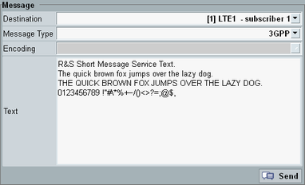

Initial situation: The DUT has registered to the IMS server. The GUI shows the "IMS" tab of the "Data Application Control" dialog.
For RCS messages, option R&S CMW-KAA21 is required.
Press the "Virtual Subscriber" hotkey.
A dialog box opens.
Press the button.
The mobile-terminating message settings of the virtual subscriber are displayed.
Configure all settings:
Select the "Destination" for the message.
Select the "Message Type".
If applicable, select the "Encoding".
Enter the message text.

For group chats, configure the participant list.
Press the "Send" button.
The dialog box is closed and the message is sent to the DUT.
A new line is added to the "Events" area. After a successful message transfer, the status in that line equals "OK" or "Text Transferred".
Check the incoming message at the DUT.
To send additional messages for an initiated chat, use the softkey "Chat Actions".
For further tests, you can create additional virtual subscriber profiles with different message settings.